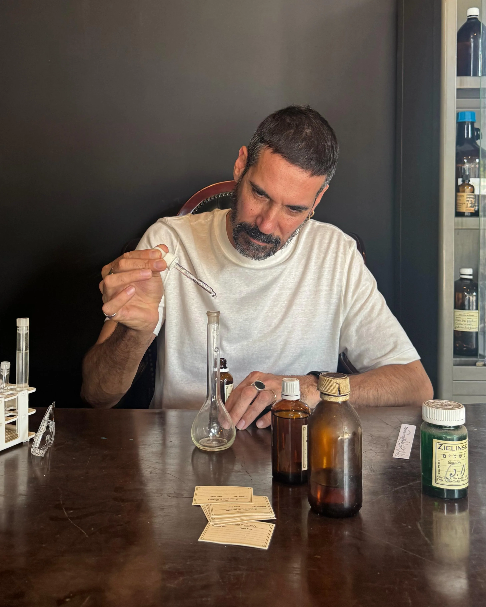
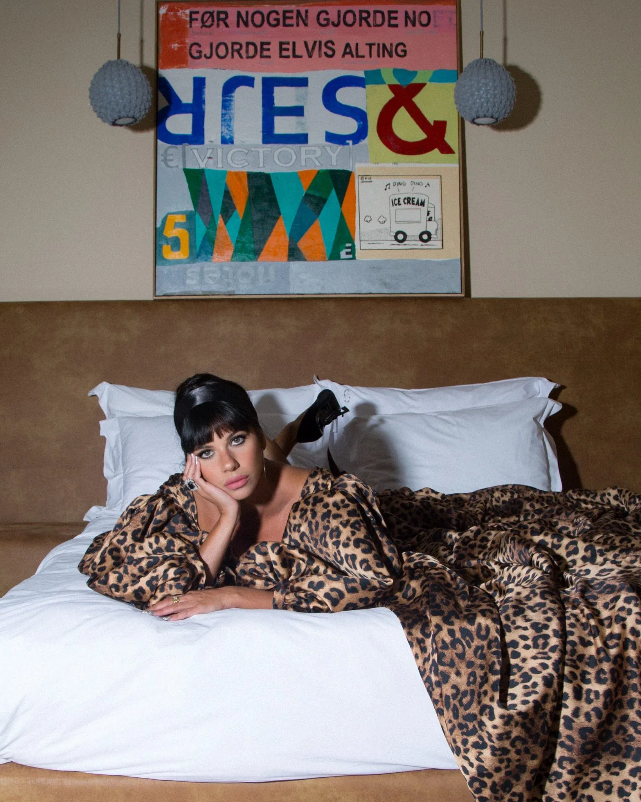
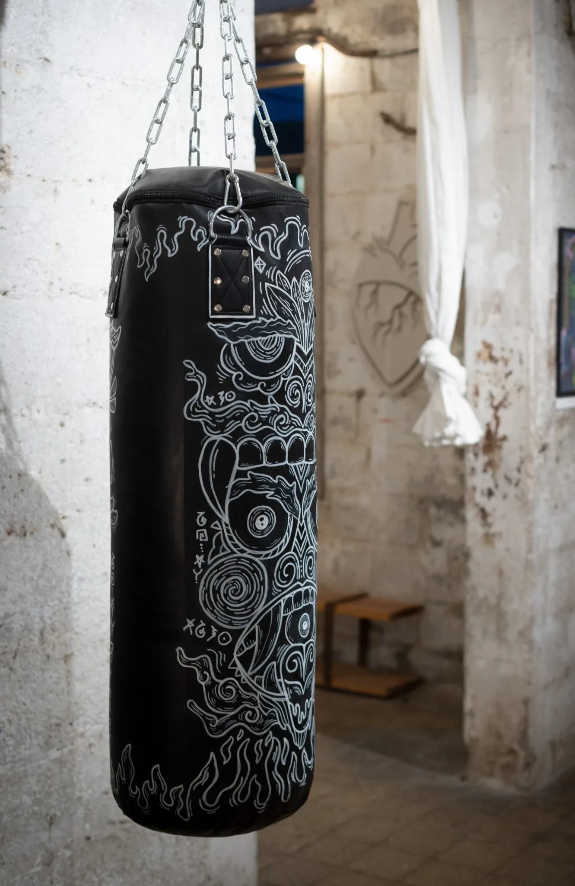
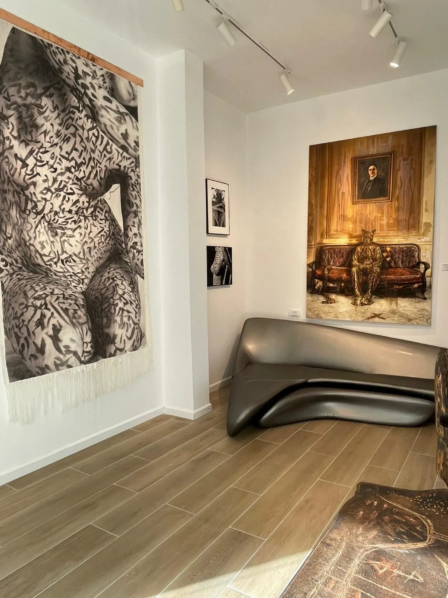
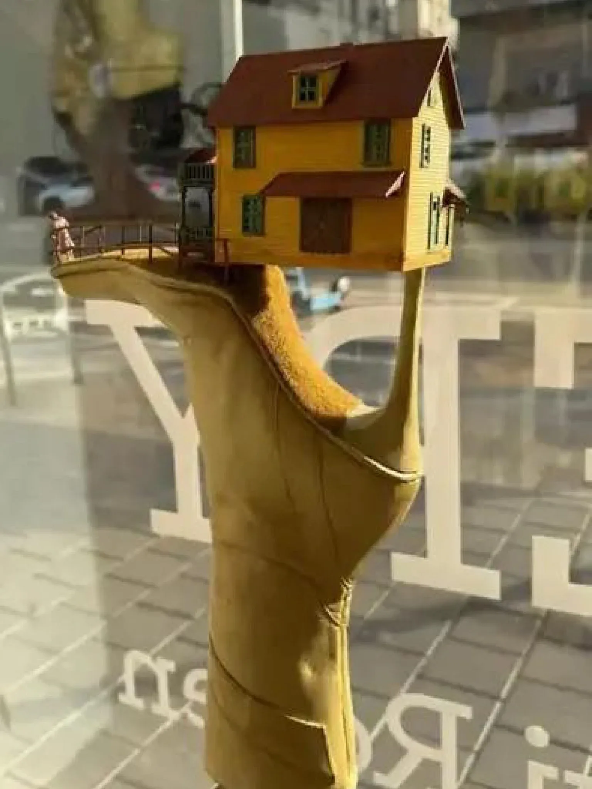
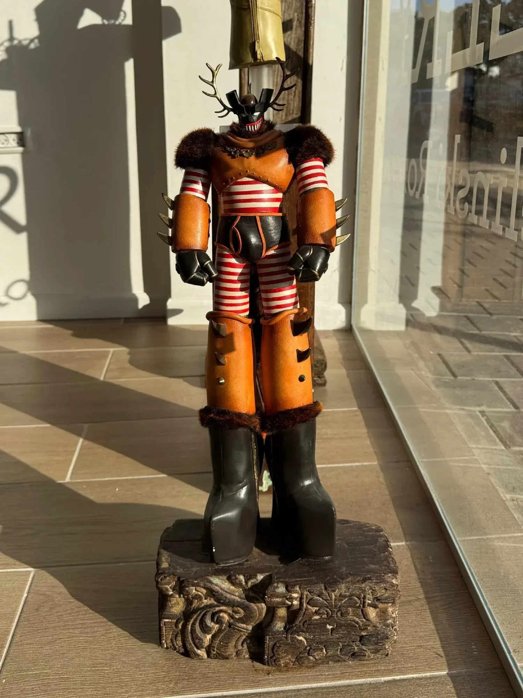
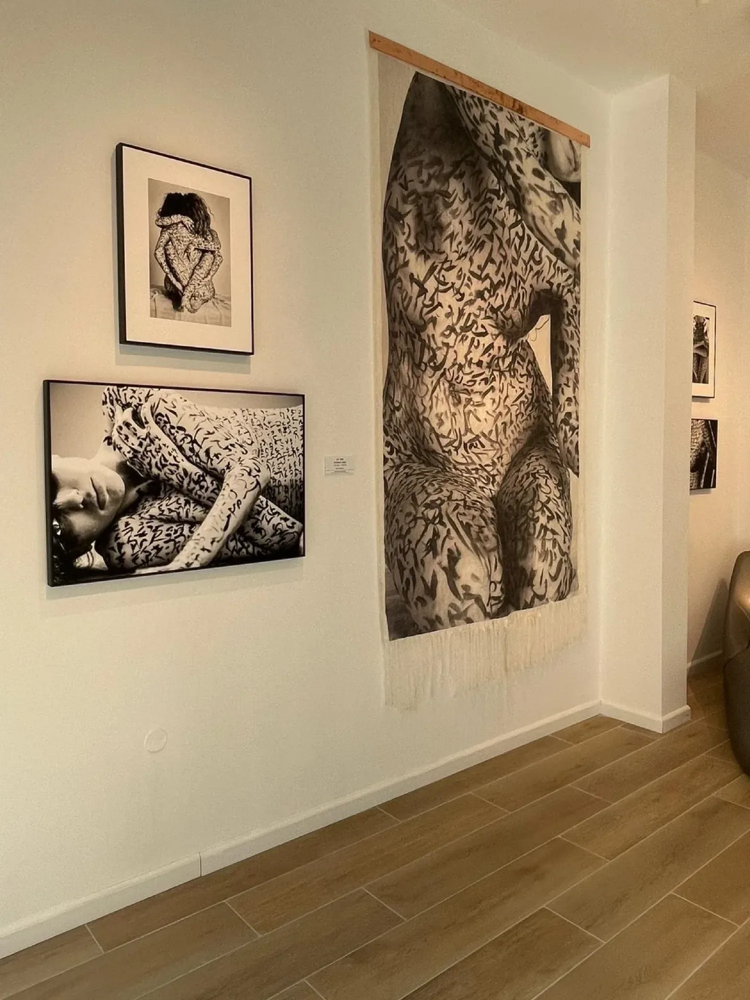
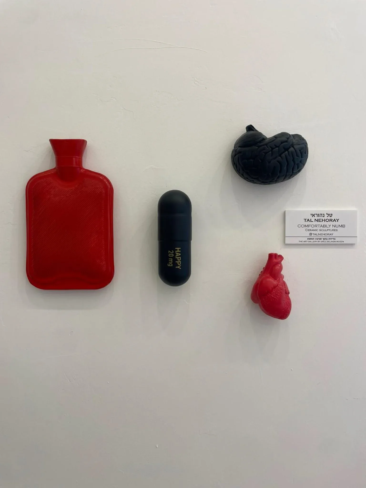

איך מרגישה בדידות
בתוך סביבה תוססת: תערוכה חדשה
בגלריית זילינסקי רוזן
מותג הבשמים זילינסקי רוזן פתח גלריה חדשה
בכיכר המדינה, עם תערוכה שאצרה קורין אברהם על ״הבדידות שנובעת
מעודף גירויים, מסכות, קולות, רעשים והסחות״ — בהשראת בושם שרקח
ארז זילינסקי, המייסד והבשם של החברה
יובל: הי קורין, ערב טוב. מה שלומך בימים אלו?
קורין: הי יובל, אני טוב, בעיקר מתרגשת. מה שלומך?
יובל: גם, לא רע בכלל בסך הכל, הרבה דברים מלהיבים על הפרק, אבל לא נגיד גלריה חדשה כמו הגלריה שלשמה התכנסנו – גלריית זילינסקי רוזן והשקת תערוכה ראשונה
קורין: עכשיו אני מתרגשת יותר…
יובל: בצדק. נדמה לי שצריך לפתוח במקרה הזה שני טאבים לפני שנדבר על הגלריה והתערוכה, ולהתחיל בזה שקודם תספרי על עצמך בכמה מילים ואז על זילינסקי רוזן
קורין: חחחח יש פה אוקסימורון, לספר על עצמי ועל זילינסקי רוזן בכמה מילים, אבל אגייס את מיטב כישורי כדי לצלוח
את המשימה
קורין: הקריירה המקצועית שלי החלה בגדול כעורכת דין, הייתי ליטגטורית בתחום האזרחי מסחרי, יעוד שדי ישב עליי מהרגע שהתחלתי לדבר. לא היתה הרבה התלבטות מה ללמוד במקרה שלי… לאחר מכן פצחתי בקריירה למשך כשמונה שנים, אבל היה חסר לי משהו בין כל ההתפלמסות, אווירת החליפות המנוכרת והפלורסנטים המדכאים, והחלטתי להאמין בחזון שדגדג לי בקצות האצבעות, לפתוח בלוג שיעסוק בכל התשוקות שלי ובעיקר תיירות, אופנה ולייף סטייל.
כולם חשבו שהשתגעתי אבל זה היה הצעד המשמעותי שעשיתי בלהאמין בעצמי על אף כל הקולות, שבלשון המעטה לא תמכו במהלך הזה.
תוך מספר חודשים כמה חברות בחו״ל זיהו משהו בסגנון שלי שמאוד דיבר אליהן, ומפה הדרך פשוט נסללה לשיתופי פעולה ופרויקטים שפתחו בפניי דרך מאוד מעניינת, לפני ובתחילת דרכו של האינסטגרם. ההצלחה שלי היתה בעיקר בינלאומית ואיפשרה לי להפיק תכנים בשיתוף עם חברות מוכרות ומוערכות. בהמשך פיתחתי עוד אפיקים והתחלתי לייעץ כקריאייטיב דירקטור לחברות שונות
יובל: מגניב. איך נוצר הקשר עם זילינסקי רוזן?
קורין: לפני שנה וחצי, בקליק שהיה ממש מיידי עם המייסד והבשם של זילינסקי רוזן, ארז, התחלתי לעבוד יחד איתו על הקריאייטיב בחברה. ארז הוא אדם מאוד מיוחד וסופר יצירתי ובעל חזון יחודי, לעיתים הוא מקדים את זמנו. במשך כל התקופה שעבדנו על רעיונות ותכנים, הוא כל שבועיים היה אומר לי שהוא חייב לפתוח גלריות לאמנות, כי זה ממש משלים חלק מהיצירה שלו מחד, וגם כי הוא ממש רוצה לתמוך באמניות ואמנים ישראלים ולחשוף אותם לעולם.
מאחר שהוא האמין והתעקש לעשות זאת ללא מטרת רווח,
די ניסיתי להוריד אותו מהרעיון, אבל הוא התעקש, עד שפשוט זה קרה, לפני חודשיים וחצי. הוא נתן לי משימה לפתוח את החנויות שעמדו ריקות בכיכר המדינה תוך חודש כגלריה לאמנות, ולאצור את התערוכה. מפה לשם אנחנו מדברים עכשיו על תערוכה עם 11 אמנים וסיפור מרגש שעומדת ופתוחה לקהל הרחב כבר שבועיים. ממש מרגש


יובל: נייס. רגע לפני התערוכה מילה על זילינסקי רוזן? לא כולם מכירים
קורין: כן בהחלט, זה מותג ישראלי שמאחוריו עומדים ארז ולאה רוזן. ארז הוא הבשם והמייסד והרוח החיה, ולאה היא המנכ״לית ומנהלת את כל האופרציה בצורה מעוררת השראה. מדובר במותג רוקחות בשמים מאוד ייחודי, שהתחיל כחנות קטנה בשוק הפשפשים ביפו, וכיום מונה כ־500 נקודות מכירה רק ברוסיה, לצד מאות נקודות מכירה ברחבי העולם וכ־100 חנויות בעולם.
מה שמדהים היה לי לגלות היא הפשטות והאכפתיות של הזוג רוזן בניהול החברה, וההחלטות החברתיות והפטריוטיות שהם לוקחים, כמו לייצר בארץ גם כשזה פחות משתלם ולפרנס משפחות ישראליות, וגם עכשיו לדוגמה להקים גלריות לאמנות מתוך רצון לתמוך באמניות ואמנים ישראלים, ללא מטרת רווח ובלי שום סוג של עמלה, בהשקעה מאוד גדולה.
בלי בשמים ובלי קופה
יובל: מאיפה התחלת? יש רצון לפתוח גלריה ולתמוך באמנות, עד כמה התוכן צריך להיות קשור לבישום? לריח? לרוח המותג? הייתה בקשה מסוימת? מה את יכולה לספר על התהליך?
קורין: בוודאי, אבל זה מאוד קצר, שום ניסיון לקשור את האמנות או התערוכה לבשמים, אם כבר התהליך והאמנות הם אלה שנתנו לארז השראה ליצור בושם נוסף לאחרונה. בגלריה אין בשמים או מוצרים אחרים מהמותג למכירה, אין אפילו קופה, התשלום הוא מול האמנים והם מקבלים את כולו
יובל: איך המשכת מפה, מה בחרת להציג בתערוכה הראשונה תחת איזו תמה
קורין: מרגע שארז אמר לי go, ישבתי וחשבתי והרהרתי, אבל בתוך תוכי ידעתי שזה פשוט יגיע, קיוויתי שמספיק מהר כדי שאוכל לעמוד בלו״ז הבלתי אפשרי של שיפוץ חנויות, מציאת רעיון ואיתור אמנים בחודש בערך, אבל האמנתי בתהליך והתמסרתי לשחרור כדי שיהיה מדויק.
ואז לילה אחד התחלתי לשוטט בפייסבוק בכל מיני חשבונות שקשורים למותג זלינסקי רוזן, בעמוד של המותג, בעמוד של ארז… לאחר כשעה וחצי נתקלתי בראיון מאוד קליל ואפילו על הדרך, שארז ערך לפני כעשור, אולי יותר. הוא סיפר שם שרקח בושם חדש בהשראת שיר ששמע בבית קפה בשוק הפשפשים, alone in barcelone.
משהו שם תפס אותי: חיפשתי את השיר, ניסיתי לדמיין מה עומד שם מאחורי המילים, החוויה, ועלתה לי מחשבה של בדידות של תיירת בעיר הומה אדם. הבדידות הייתה משהו שהיא פשוט הביאה איתה לעיר, בבחינת you are taking yourself everywhere you go. צללתי עם המחשבה הזאת לחדרים נוספים, לבדידות שנובעת מעודף גירויים, מסכות, קולות, רעשים והסחות שמטשטשים את הקול הפנימי שלנו. הרגשתי ממש את הדמות עומדת שם באמצע הרחוב, בהשתהות שמאפשרת לה התפכחות על התחושות והרגשות שלה.
זיקקתי את זה לתחושה אחת – מה קורה לנו כשאנחנו מרגישים בדידות, לא על עצם העובדה שאנחנו לבד, אלא מה קורה בפנים כשמסביב הכל רועש
יובל: ועם זה פנית לאמנים? איך בחרת את האמנים/עבודות?
קורין: לא היה לי טקסט אחיד שפניתי איתו, ניסיתי לחקור קצת ולהבין מה הזוויות שאני רוצה להציג. חלק הגיעו אליי בדרכים מקובלות כשפירסמתי קול קורא, וחלק פשוט הגיעו אליי בדרכי הגורל. הבחירה נעשתה באופן שאצליח לקבץ מכלול שיראה זוויות וסוגים שונים של תחושת הבדידות, ושל הסביבות התוססות, כי כל אחד חווה את החוויה מהמקום שלו והיה לי חשוב להביא מגוון חוויות
יובל: תני 2-3 דוגמאות לעבודות?

קורין: אתחיל עם אמנית הקרמיקה טל נהוראי. בחרנו ממגוון העבודות שלה את ערכת הבדידות שכוללת פריטים וסמלים של נחמה ורגש: גלולת אושר, בקבוק חימום, והתחרות המתמדת בין הלב למוח.
דוגמה נוספת הן היצירות המגוונות של טל קדוש, שק אגרוף המעוטר במסכות וברכות שנכתבו בשפת סתרים. השק מדמה את המסע הפנימי שלנו והחבטות עם הדפוסים הפנימיים שלנו, אך התזכורת שלהם על גבי השק מזמינה אותנו לא רק להיאבק בהם אלא לראות אותם כשליחים של התודעה, שמבקשת ריפוי.
יוצרת נוספת שעוסקת באמנות של שיבוץ קריסטלים היא גל פולק, שמציגה מספר עבודות בנושא קללות, ג׳אנק פוד, שלט לחדר בכי וכו׳, שנותנים הצצה לזעם והבריחה שלנו מתחושת הבדידות
יובל: מה התכנית הלאה? כל כמה זמן מתוכננת להיפתח תערוכה חדשה? כמה תערוכות בשנה?
קורין: אנחנו מכוונים לכחמש תערוכות בשנה, ויש המון תוכניות שכבר קורמות עור וגידים (עדיין לא יכולה לחשוף אבל מבטיחה לעדכן), הרבה דברים מרגשים. ארז צורך את הדופמינים שלו מהעולמות שהוא בונה סביב מותג הבישום ועכשיו סביב מחלקת האמנות בחברה
יובל: יפה. מה עוד? משהו חשוב נוסף להגיד שלא אמרת לפני שניפרד?
קורין: אני יכולה לדבר על התערוכה והגלריה שלושה ימים רצופים, אבל נשאיר את זה ככה. אשמח להזמין אותך ואת הקוראים לבוא להתרשם
בדידות בתוך סביבה תוססת
אוצרת: קורין אברהם
גלריה זילינסקי רוזן, ז׳בוטינסקי 131, כיכר המדינה, תל אביב
בהשתתפות: זוהר רון, טל ״הולי״ קדוש, טל נהוראי, איתן גולדסון, קוסטה מגרקיס, הילה לוטרשטיין, גל פולק, מאיה נחום לוי, עדי דואק, רז רונן, זוהר שטרית, LA RAZ PORTA
נעילה: 28.2




